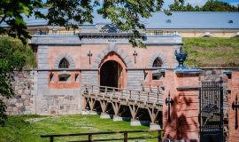
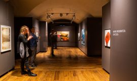

Places To Visit

DAUGAVPILS FORTRESS
Daugavpils Fortress is a unique cultural and historical architectural monument of national significance, covering an area of about 150 hectares. It is considered the last bastion type fortress in the world that has survived without major alterations and still retains its unique fortification system. From a birds eye view, the fortress resembles the shape of a sun or a star, while some observers see the outlines of a turtle or a bat. Today, the fortress is one of the most popular attractions in Daugavpils.

ROTHKO MUSEUM
The Rothko Museum in Daugavpils, Latvia, is one of the 21st centurys most ambitious cultural projects in Eastern Europe. Located in the historical artillery arsenal of the Daugavpils Fortress, this multifunctional hub for art, culture and education remains an evolving and inspiring place for creative expression and experience.